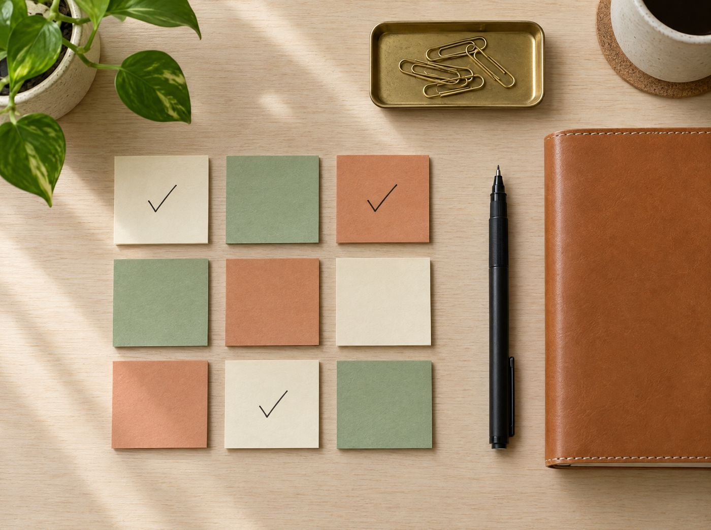

07:30 · Morning
今日の予定と Todo をひと目で
ウィジェットの 2 週間カレンダーと、Siri の「今日をまとめて」。家を出る前に 1 日の流れがわかります。
Daystitch: Planner & To-Do
iPhone · iPad · Apple Watch
Apple Pencil で書ける手帳ページと、見やすいカレンダー、使いやすい Todo。会議の録音から AI が議事録まで。毎日を 1 冊にまとめる手帳アプリです。
A day with Daystitch
予定を確かめる朝、会議の多い昼、ふり返る夜。どの時間も、同じ手帳の中で続いていきます。
07:30 · Morning
ウィジェットの 2 週間カレンダーと、Siri の「今日をまとめて」。家を出る前に 1 日の流れがわかります。
14:00 · Meeting
会議が終わるころには、要点と「やること」がまとまって手帳に。やることは Todo へ送れます。
21:00 · Evening
写真やスタンプを貼って、自分だけのページに。AI が書き出しのヒントもくれます。
Features
画面はアプリの動きをわかりやすく描いたイメージです。
01 · Meeting notes
日のページで録音ボタンを押すだけ。止めると自動で文字に起こし、AI が「要点・決まったこと・やること」にまとめます。長い会議も区切って読み取ります。
00:02では、来月のキャンペーンの企画案から確認します。
00:15デザイン案は 2 つ。A 案のほうが反応がよさそうです。
00:31見積もりは金曜までに先方へ送りましょう。
来月のキャンペーンは A 案で進める。見積もりと日程を今週中に固める。
02 · To-Do
「今日・明日以降・いつか・プロジェクト」で整理。左右のスワイプで日付を変えたり、まとめて選んで完了にしたり。締め切りが来たものは、赤い旗で自動的に「今日」へ。

03 · Calendar
年・月・週・日の 4 つの表示。日本の祝日と六曜（大安・仏滅など）、天気もいっしょに。iPhone のカレンダー（Google・Outlook の予定も）を重ねて見られます。
04 · Handwriting
Apple Pencil や指で自由に。下まで書き進めるとページが広がり、消しゴムは「なぞった所だけ」と「線ごと」を切り替え。写真・スタンプ・マスキングテープも貼れて、手書きの文字はあとから検索できます。
05 · Apple Intelligence & Siri
Apple Intelligence で、話し言葉から予定や Todo を作成。今日のブリーフィング、週のふり返り、大きな Todo の分解、空き時間への割り当て、AI で描いた絵を日記に。すべて追加料金なし、端末の中で処理されます。
06 · Apple Watch
Apple Watch で予定を確認して、Todo をタップで完了。音声で Todo を追加すれば、iPhone の手帳にもすぐ反映されます。文字盤には次の予定と残りの件数を。
And more
Price
すべての機能を 1 週間お試しいただけます。期間内に解約すれば料金はかかりません。
発売記念価格 · 2027年2月28日までのご登録
¥1,500 / 年